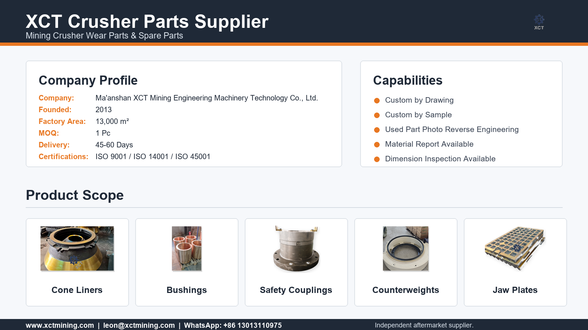

Model, number and drawing review
Before quoting critical parts, XCT checks model, part name, reference number, photos, drawing notes, material and quantity to reduce wrong-fit risk.
Quality and inspection
XCT Mining organizes crusher part quotes around confirmable data: model, part number, material, dimensions, production route, inspection expectations and export packing requirements.

Before quoting critical parts, XCT checks model, part name, reference number, photos, drawing notes, material and quantity to reduce wrong-fit risk.
Different parts may require casting, heat treatment, CNC machining, drilling, milling, grinding or finishing. The route depends on material and drawing requirements.
Inspection focus changes by part type: liners need material and visual review, bushings need dimensions and surfaces, hydraulic parts need function and sealing attention.
Heavy parts can be packed by pallet or wooden case with product labels, rust prevention where needed and photos before dispatch for buyer records.
Procurement documents
Document availability depends on product type, order value and agreed inspection scope. Ask before production if a specific report format is required.